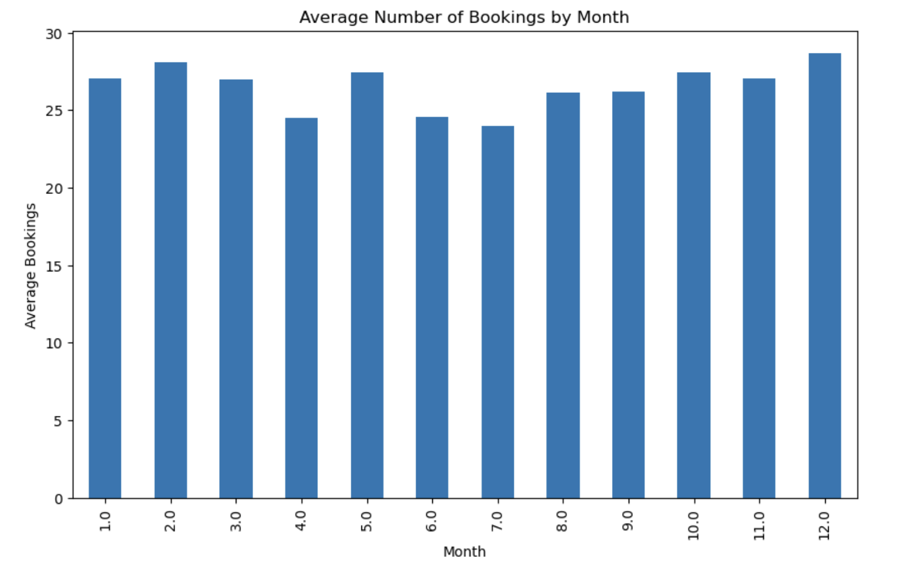
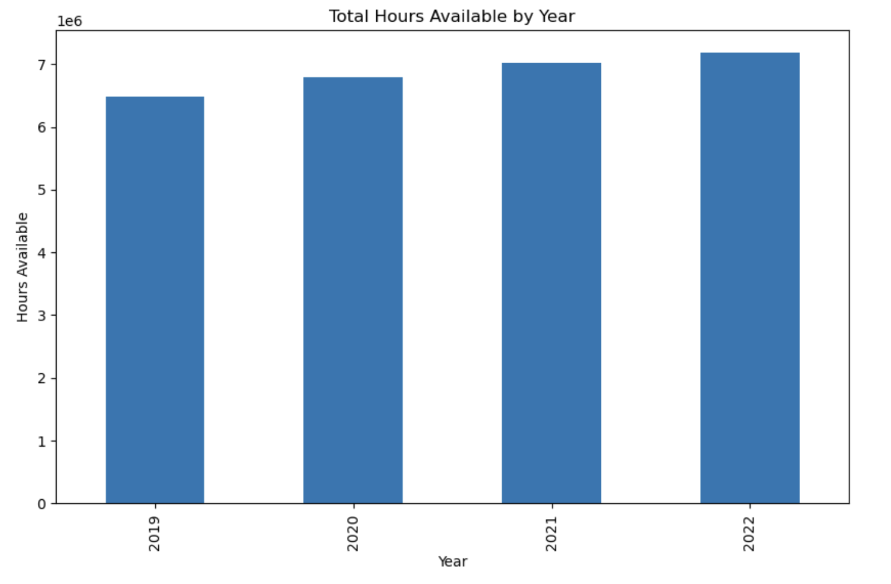

Car share bays
Scroll down to get started
Scroll down to get started
Total hours booked during 2019 vs. time series chart. It’s reflected in a sluggish Q2 2020, due to disruptions, followed by recovery and sustained growth to rebalance increasing demand and market resiliency.
The bookings are depicted below under the monthly average bookings that are relatively high throughout the year with December as the highest. Small declines in April and June may be explained by seasonal fluctuations, while December records the most popular trend.
The graph shows total bookings over time, with a dip in the mid 2020, and a large early 2021 peak. Afterwards, bookings stabilize and book values return to a recovery and resilience pattern as we saw them before the disruption, which is between 20,000 and 40,000.
The graph represents the year wise total hours available from 2019-2022 and they are gradually elating from 6M to 7M plus total hours. The figures show a consistent increase in capacity or efficiency with no sign of deterioration over the four years period.
The graph depicts the trip distances of months in 2019 and 2022, represented by the blue line, and strongly indicates an increasing trend in trips with remarkable fluctuations in the mid-2020 period. After the recovery, there is a sharp rise in 2021, further oscillations and a rise, signifying more traveling activity in future.